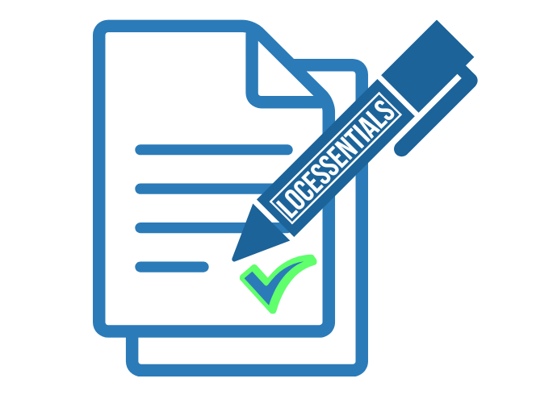
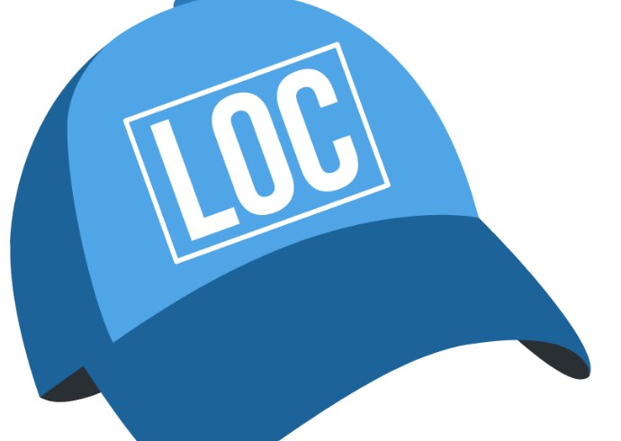

Conclusion: Your Path Forward
Congratulations on completing Loc300: Selecting a Translator! You now have frameworks and knowledge that will help you find great translators and translation agencies more easily, and communicate with them in a knowledgeable manner about your localization needs.
What You've Learned
Throughout this course, you've explored the essential elements of translator selection. You've learned when human translation is the right choice versus automatic translation, how industry standards like ASTM F43 labels help you specify quality requirements, and how to evaluate both individual translators and translation agencies using systematic criteria. You've gained practical frameworks for assessing vendor qualifications and understanding what professional verification really means.
What Comes Next
Of course, there's an entire process that comes after selecting a translator: vendor management, quality assurance, and ongoing relationship building. These topics will be the subject of forthcoming LocEssentials courses, in addition to the automatic translation courses we're developing on selecting NMT engines and LLMs for translation.
And if you find great talent through the selection process you've learned here, we'd recommend that you hire them as in-house translators.
Need Help with Your Translation Strategy?
If you're looking for guidance on deciding between automatic or human translation, or help selecting translators or agencies for your specific needs, we're here to support you. Submit a custom quote request, and we'll get back to you with tailored recommendations.
Request a QuoteContinue Your Learning Journey
If you're not quite ready for this course to end, you can reach out to us for additional support:

Work Assessment
Get expert evaluation of your translator or translation agency selection criteria.

One-on-One Coaching Session
Talk directly with our team about questions you have related to selecting a translator.
A Final Thought on Reach
Localization and translation are activities that can allow you to better connect with audiences internationally, but also with the international audiences who live together in a single region. Take the United States, for example. Just because English is the lingua franca there does not mean that producing content in English will allow you to connect with the minds and hearts of America's multicultural people who speak many mother languages. The frameworks you've learned in this course about selecting translators with purpose apply whether you're reaching across borders or within them.
About the Author
Stay Connected
Join the LocEssentials community to stay informed about new courses, industry insights, and best practices in localization. Subscribe to our blog and follow us on LinkedIn and YouTube for regular updates, or reach out directly with questions about your specific localization challenges.